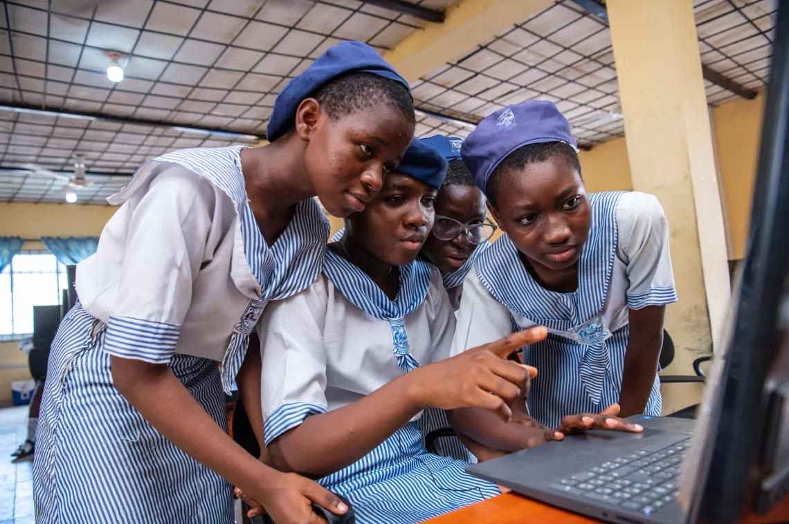
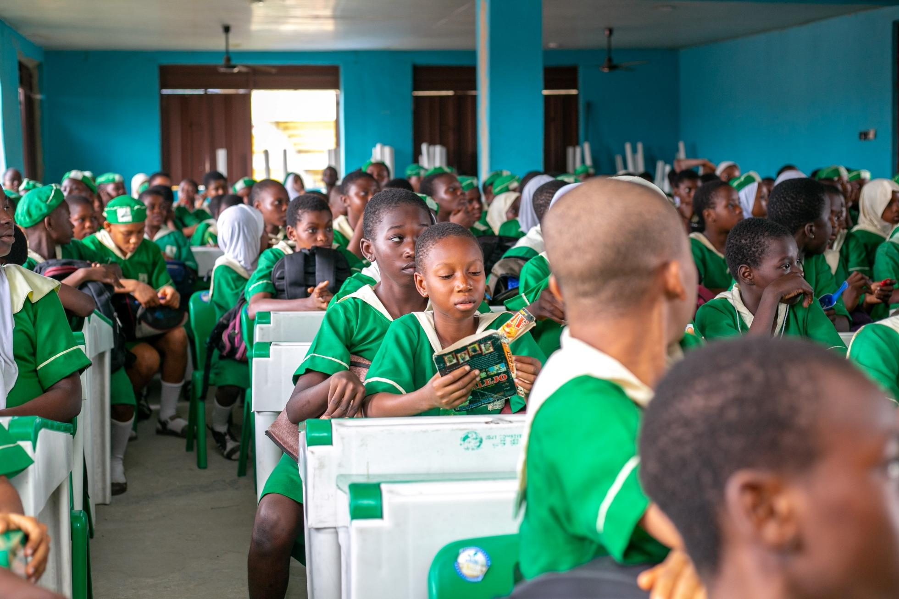
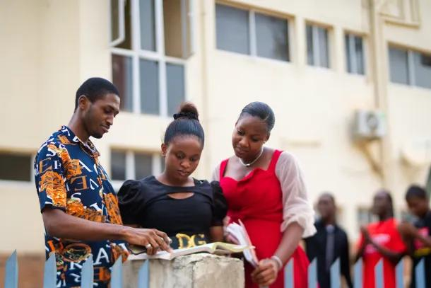
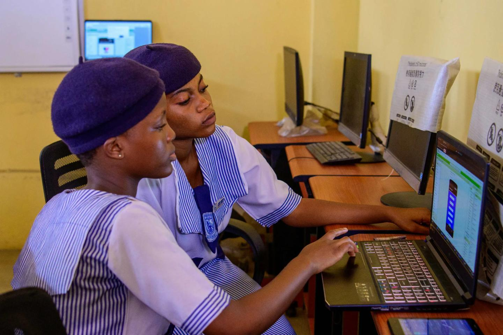
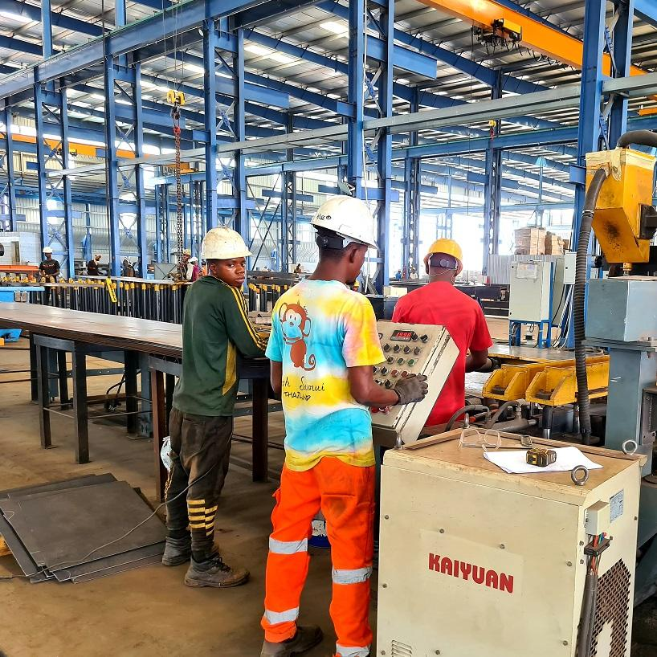
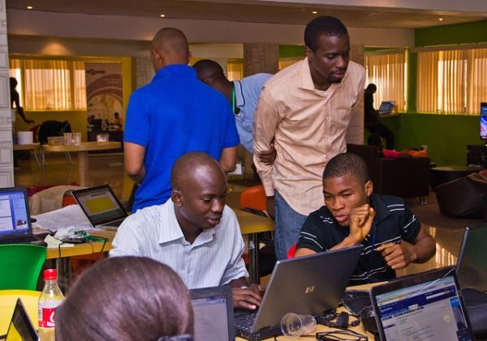
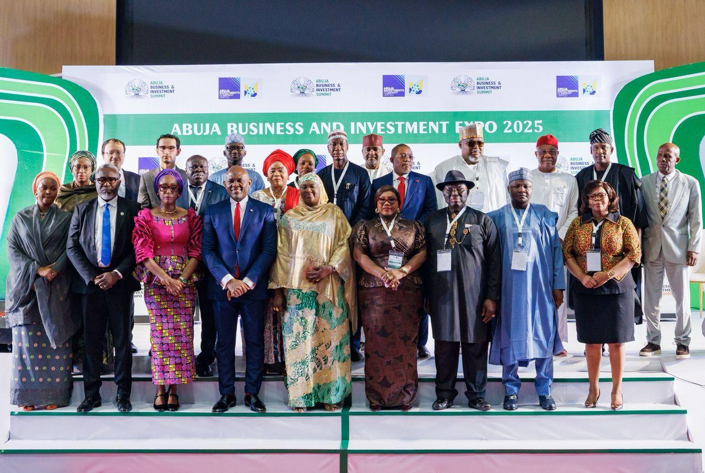
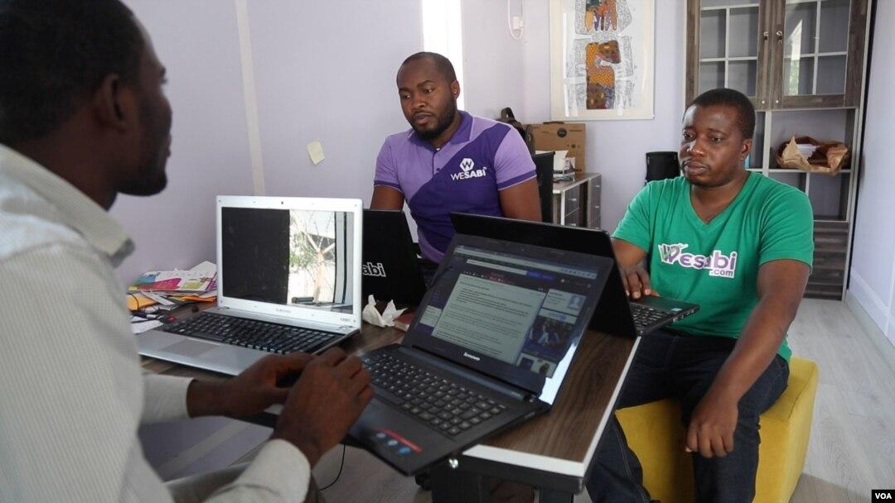
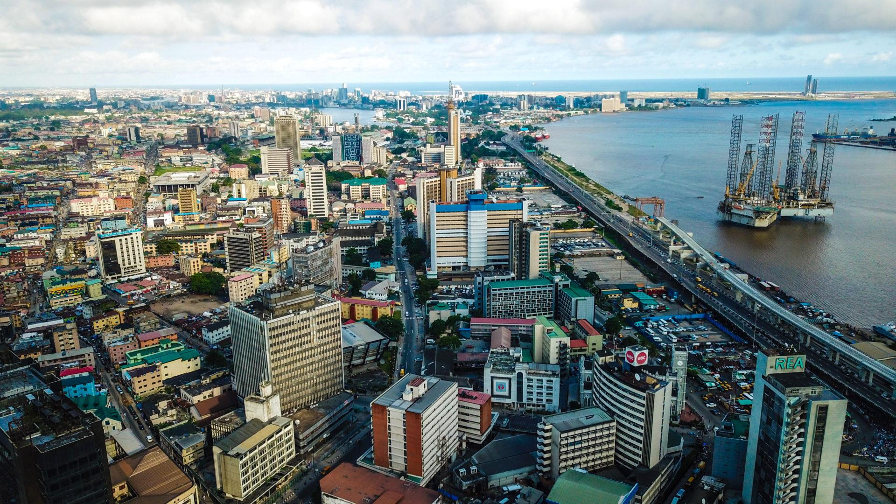
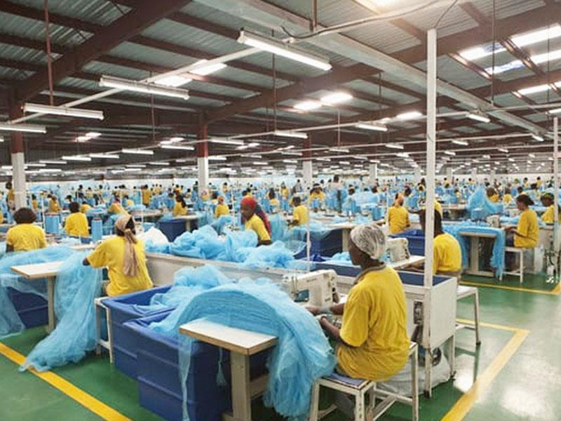

Nigeria Pushes Education Reforms and Economic Ambitions
Posted on 10th August, 2026.
Nigeria is intensifying efforts to transform its education system while pursuing broader economic reforms aimed at building a more productive, competitive and diversified economy.
The Federal Government increasingly sees education not simply as a social service, but as a major investment in human capital, innovation, technology and long-term economic growth. Recent government programmes are therefore placing greater emphasis on technical skills, digital learning, teacher development, student financing and improved access to basic education.

Education at the Centre of Nigeria's Economic Plans
President Bola Ahmed Tinubu's administration has repeatedly linked education to Nigeria's ambitions for sustainable economic growth and technological advancement.
Speaking at the University of Nigeria, Nsukka convocation ceremony in July 2026, President Tinubu described education as a strategic investment in the country's future and said it is fundamental to economic growth, technological advancement and national development.
The Federal Ministry of Education's Nigeria Education Sector Renewal Initiative (NESRI) provides a framework for the reforms. Its six-point agenda focuses on Technical and Vocational Education and Training (TVET), STEMM, out-of-school children, girl-child education, data and digitalisation, and quality assurance.

The objective is to make education more relevant to the needs of a changing economy and equip young Nigerians with skills that can translate into employment, entrepreneurship and innovation.
Government Expands Skills and Technical Education
One of the major priorities is technical and vocational education.
Nigeria has a large and youthful population, making skills development particularly important as the country seeks to create more jobs and reduce dependence on traditional sources of employment.
According to the Federal Ministry of Education's NESRI programme, 160,000 young people have participated in the first TVET cohort, while billions of naira have been disbursed in TVET stipends. The programme is designed to give young Nigerians practical skills that can be applied in areas such as technology, manufacturing, construction and other industries.
The emphasis on skills also reflects the government's desire to close the gap between what students learn and what employers require.

Major Investment in Basic Education
The government has also launched the
HOPE-EDU programme
, a $552 million basic education initiative supported by the World Bank and Global Partnership for Education.The programme is expected to improve learning outcomes, expand access and strengthen education infrastructure. Reuters reported that it is designed to reach about 29 million children, more than 500,000 teachers, 65,000 public schools and 10,000 non-formal learning centres across Nigeria.
The scale of the programme highlights the size of the challenge facing Nigeria's education sector, particularly in ensuring that children receive quality foundational education.
Student Loans and Access to Higher Education

Another important part of the reform agenda is improving access to tertiary education through the Nigerian Education Loan Fund (NELFUND).
The student loan programme is intended to reduce financial barriers for students who might otherwise struggle to pay for higher education. The Federal Ministry of Education's reform platform currently reports about 1.59 million NELFUND beneficiaries.
Improved access to higher education could help Nigeria develop a larger pool of graduates in areas such as science, technology, engineering, medicine, business and other professional fields.

Connecting Education to a $1 Trillion Economy
Nigeria's education reforms are closely connected to the government's wider economic ambitions.
Education Minister Dr. Maruf Tunji Alausa has said that reforms in education are intended to help support President Tinubu's ambition of building a $1 trillion Nigerian economy by 2030. He has argued that investment in human capital and skills can turn Nigeria's large youth population into an economic advantage.
This approach is based on the idea that a stronger economy requires more than natural resources. Nigeria also needs skilled workers, entrepreneurs, researchers, engineers, technicians and digital professionals capable of producing goods and services for domestic and international markets.
Economic Reforms Continue Amid Cost-of-Living Challenges

These reforms have attracted investment and improved some economic indicators, but they have also placed considerable pressure on households.
A Reuters report published on August 10, 2026, said investor sentiment has strengthened, with capital inflows reaching a six-year high and the Nigerian stock market rising strongly. However, many households continue to face high living costs, while elevated interest rates make borrowing difficult for businesses and consumers.
This creates an important challenge for the government's economic strategy: ensuring that macroeconomic improvements eventually translate into better living standards and more opportunities for ordinary Nigerians.
Human Capital and Poverty Reduction
The government is also linking education with broader social-development programmes.
In July, Nigeria launched five social intervention and development programmes worth approximately $3.05 billion, including the HOPE package, which contains a dedicated education component.
The Federal Government said the programmes are intended to reduce poverty, strengthen communities, improve healthcare and education, and build human capital. The HOPE package includes HOPE-Education, which focuses on foundational education and teacher development.

This suggests that education reform is increasingly being treated as part of a wider strategy covering employment, poverty reduction, healthcare and economic productivity.
Technology and Digital Education
Digitalisation is another major component of Nigeria's education reform agenda.
The government is seeking to expand the use of technology in education, improve education data and introduce young people to digital skills. The NESRI programme lists data and digitalisation among its six core reform areas and reports partnerships involving institutions and technology-focused programmes.
For Nigeria, digital education could become particularly important because technology can provide students with access to learning resources beyond the traditional classroom.

However, challenges such as unreliable electricity, internet access, inadequate equipment and the digital divide between urban and rural communities will need sustained attention.
What the Reforms Could Mean for Nigeria
If successfully implemented, Nigeria's education and economic reforms could have significant long-term benefits.
Among the potential outcomes are:
- More skilled workers for emerging industries.
- Greater access to education for disadvantaged students.
- Improved teacher quality and learning outcomes.
- More opportunities for young entrepreneurs.
- Growth in technology and innovation.
- Stronger links between education and employment.
- Greater economic diversification.
- Improved productivity and competitiveness.

But achieving these goals will require consistent funding, transparency, effective implementation and strong cooperation between federal and state governments, schools, businesses and development partners.
The Road Ahead
Nigeria's economic ambitions cannot be separated from the quality of its education system. A country seeking rapid economic growth needs a workforce capable of creating businesses, operating modern industries, developing technology and competing in the global economy.
The government's current education agenda represents an attempt to move Nigeria toward a more skills-driven and knowledge-based economy.
The biggest test, however, will be implementation. Nigerians will ultimately judge the reforms by whether they lead to better schools, improved learning, more affordable higher education, employable skills, new businesses and better-paying jobs.

Conclusion
Nigeria is pursuing two closely connected objectives: reforming education and strengthening the economy. From TVET and digital learning to student loans and large-scale basic education programmes, the government is attempting to build the human capital needed for future growth.
The success of this strategy will depend not only on the amount of money invested, but also on how effectively programmes are implemented and whether ordinary Nigerians experience meaningful improvements in education, employment and living standards.